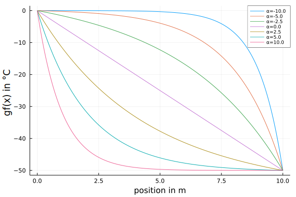
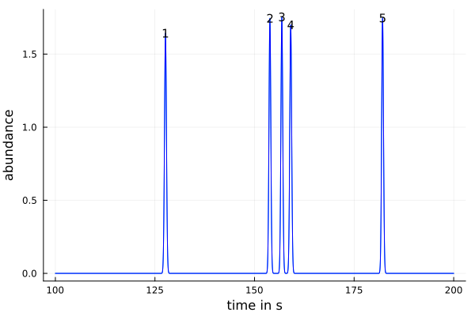
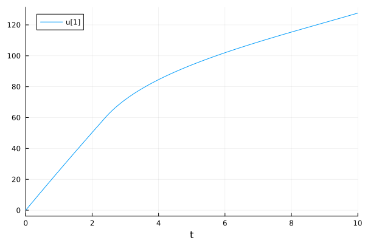
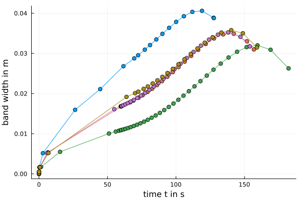

Usage
In the following section the general usage and setup of the simulation is explained.
A GC-system for the simulation is defined by four sets of parameters:
Option parameters
A fourth set of parameters, GasChromatographySimulator.Options, holds additional options used in the simulation with the following arguments:
alg: The algorithm used for the ODE solver. The algorithmsOwrenZen3(),OwrenZen4()andOwrenZen5()are recommended.abstol: The absolute tolerance for the ODE solver. Recommended value 1e-6 to 1e-8.reltol: The relative tolerance for the ODE solver. Recommended value 1e-3 to 1e-5.Tcontrol: Option defining at which point of the column the temperature program is calculated. The options areinlet(x=0) andoutlet(x=L).odesys: Combine the ODEs for migration and peak-width into a system of ODEs (odesys = true) or solve the two ODEs separately (odesys = false).ng: Option to calculate the simulation without a gradient (ng = true) or with a gradient (ng = false).vis: Used model of viscosity.HPis a model taken from the HP flow calculator with a linear temperature dependency of the viscosity.Blumbergis an emperical formula according to the book[7]control: Control of the "Flow" or of the "Pressure" (at column inlet) during the program
The default options can be initialized by calling:
opt = GasChromatographySimulator.Options()GasChromatographySimulator.Options(OwrenZen5(), 1.0e-6, 0.001, "inlet", true, false, "Blumberg", "Pressure")GC Column parameters
A GC column is defined by the dimensions of the column, length L, diameter d and film thickness of the stationary phase df, all measured in meters, the name of the stationary phase and the name of the mobile phase (with the allowed values "He", "H2" and "N2").

These values are collected in the type structure GasChromatographySimulator.Column, which allows to define a function depending on column position x of the diameter d(x, a_d) and film thickness df(x, a_df), where a_d, resp. a_df are parameters of the function.
The following method constructs the Column structure col with a constant diameter and film thickness:
col = GasChromatographySimulator.Column(10.0, 0.25e-3, 0.25e-6, "SPB50", "He")Program parameters
The program for a GC separation is defined by a temperature program $T(t)$ and a pressure program. Typically (option control = "Pressure") the inlet pressure is controlled over time $p_{in}(t)$ and the outlet pressure is constant, but here the outlet pressure can also be a function of time $p_{out}(t)$. It is also possible to control the flow $F(t)$ through the column (option control = Flow) instead of the inlet pressure. In this case the values of the flow (in m³/s) replace the values of the inlet pressure in the following definitions. In addition a thermal gradient can be applied, where the temperature of the GC column changes depending on position $x$ on the column.
The program parameters are collected in the type structure GasChromatographySimulator.Program.
Different methods exist to construct the Program structure, depending on the usage of a thermal gradient. In two examples the definition of the program parameters will be explained.
Without thermal gradient
Without a thermal gradient the temperature is the same at every column position at the same time. This is the normal case for conventional GC. One example of such a program can be achieved by the following method GasChromatographySimulator.Program(time_steps, temp_steps, pin_steps, pout_steps, L), which constructs the Program structure:
prog = GasChromatographySimulator.Program( [0.0, 60.0, 600.0, 120.0],
[40.0, 40.0, 300.0, 300.0],
[18.0, 18.0, 98.0, 98.0].*1000.0 .+ 101300.0,
101300.0.*ones(4),
col.L)The first array time_steps defines the time steps (in s), the second array temp_steps defines the temperatures (in °C) at these time steps, the third and fourth array (pin_steps and pout_steps; resp. F_steps and pout_steps if the option control = "Flow") define the inlet and outlet pressures (both in Pa(absolute)) at the time steps. The values of temperature and pressures change linearly between the values defined at the time steps. The following picture shows the resulting temperature and pressure program:
The first time step is always zero (t₁ = 0.0 s) and the following time steps define the time that passes until the next step. In the example the second time step is t₂ = 60 seconds long and in this time the temperature stays constant at 40°C. With the next time step (t₃ = 600 s) the temperature changes from T₂ = 40°C linearly to T₃ = 300°C. In the last time step (t₄ = 120 s) the temperature is again kept constant at 300°C. The pressure program is defined in the same way. The inlet pressure changes similarly at the time steps, while the outlet pressure is constant.
The four arrays for time steps, temperatures and the two pressures (or flow and outlet pressure) must have the same number of elements, otherwise the construction of the Program structure gives an error message. Complex programs with several different heating ramps and temperature plateaus, as well as programed pressures, e.g. pressure pulses, can be realized by adding the temperature/pressure values at additional time steps.
Conventional program notation
In the control software of most commercial gas chromatographs the program is defined by temperature levels $T_i$, holding times $t_i$ of the temperature levels and heating ramps $r_i$ between the temperature levels. These programs can be written for a program with $n$ temperature levels and $n-1$ heating ramps as:
$T_1(t_1) - r_1 - T_2(t_2) - r_2 - T_3(t_3) - ... - r_{n-1} - T_n(t_n)$
With the function GasChromatographySimulator.conventional_program such a conventional program notation can be translated into the program notation used in this simulation. Hereby is CP a vector of the form [T₁, t₁, r₁, T₂, t₂, r₂, T₃, t₃, ...].
CP = [40.0, 1.0, 5.0, 280.0, 2.0, 20.0, 320.0, 2.0]
ts, Ts = GasChromatographySimulator.conventional_program(CP)([0.0, 60.0, 2880.0, 120.0, 120.0, 120.0], [40.0, 40.0, 280.0, 280.0, 320.0, 320.0])With the function GasChromatographySimulator.temperature_program(time_steps, value_steps; time_unit="min") the used program with time steps and temperature steps can be translated into the conventional program notation.
TP = GasChromatographySimulator.temperature_program(ts, Ts; time_unit="min")8-element Vector{Float64}:
40.0
1.0
5.0
280.0
2.0
20.0
320.0
2.0These functions can also be used for the notation of other programs, e.g. programs of the inlet pressure.
Thermal gradient
Predefined gradient function
In the following text the expression temperature program means the change of the temperature with time t, while the expression temperature gradient means the change of the temperature with column position x.
In addition to a linear temperature and pressure program , a temperature gradient can be defined. Using the method GasChromatographySimulator.Program(time_steps, temp_steps, pin_steps, pout_steps, a_gf, Tcontrol, L) a pre-defined temperature function gf(x) is used to set the GC program.
prog_g = GasChromatographySimulator.Program([0.0, 60.0, 150.0, 150.0, 120.0],
[40.0, 40.0, 170.0, 300.0, 300.0],
150000.0.*ones(5),
101300.0.*ones(5),
[[0.0, 0.0, 60.0, 60.0, 20.0] zeros(5) col.L.*ones(5) [0.0, 0.0, -2.0, -5.0, -5.0]],
"inlet",
col.L)Similar to the setup before, the arrays time_steps, temp_steps, pin_steps (resp. F_steps, if option control = "Flow") and pout_steps are used. Added are the the array a_gf, containing the parameters for the temperature function gf(x) and the option Tcontrol (with options "inlet" and "outlet"), which defines at which position of the column the temperature program is defined (Tcontrol = "inlet" ... temperature program defined at x=0; Tcontrol="outlet" ... temperature program defined at x=L). The following picture shows the resulting temperature program at the column inlet and outlet:

The parameters of the pre-defined gradient function gf(x) consists of four arrays with the same length as the array time_steps. These four arrays represent four different parameters:
ΔT... the temperature difference betweenx = x₀andx = x₀ + L₀x₀... the start position, typicallyx₀ = 0.0L₀... the distance from the start position, typicallyL₀ = Lα... the gradient profile factor
The form of the gradient function can change over time. For every parameter the same number of values as the number of time_steps are defined and different gradient functions at the different time_steps are defined. For times between the time_steps the gradient function at a fixed position changes linearly in time between the values at the surrounding time_steps.
The pre-defined gradient function distinguishes two cases for the gradient profile factor. For α<=0 it is defined as
$gf(x) = ΔT \left( 1 - \exp{\left(α \left( 1 - \frac{x - x_0}{L_0}\right)\right)} + \left(1 - \frac{x - x_0}{L_0}\right) \exp{(α)}\right)$
For α>0 it is defined as
$gf(x) = ΔT \left(\exp{\left(-α \frac{x - x_0}{L_0}\right)} - \frac{x - x_0}{L_0}\exp{(-α)}\right)$
The following graph shows different gradient functions for different profile factors α (ΔT = 50°C, x₀ = 0.0m and L₀ = 10.0m).

For α=0 a linear change of the temperature along the column is achieved. For negative α-values the gradient has a concave profile, with small changes of the temperature near the inlet and great changes towards the outlet. For positive α-values the gradient has a convex profile, with great changes near the inlet and small changes towards the outlet.
From the parameters time_steps, temp_steps, a_gf and gradient function gf(x) the temperature at every position x and every time t is linearly interpolated in a function T_itp(x,t), which is stored in the GasChromatographySimulator.Program structure. The parameters time_steps and pin_steps, resp. pout_steps, are used to construct the linear interpolated pressure function in time pin_itp(t), resp. pout_itp(t). These interpolated functions are used throughout the simulation.
Substance parameters
A third set of parameters, GasChromatographySimulator.Substance, is used to store the informations about the substances which are separated in the simulated GC-run. The stored information are the name, the CAS-number, three thermodynamic parameters (Tchar θchar ΔCp, see also [6]), the dimensionless film thickness (df/d) of the Column for which the thermodynamic parameters were estimated, the diffusivity (calculated from the molecular formula, number of rings in the molecule and mol mass), the injection time and initial peak width. For several substances an array of the type GasChromatographySimulator.Substance is used.
With the function GasChromatographySimulator.load_solute_database the data for selected substances and a selected stationary phase is loaded from an external database (a .csv-file).
stat_phase = col.sp
solutes = ["C10", "C11", "C12", "2-Octanol", "2-Octanone"]
t₀ = zeros(length(solutes))
τ₀ = zeros(length(solutes))
sub = GasChromatographySimulator.load_solute_database("../../data", "Database_test.csv",
stat_phase,
col.gas,
solutes,
t₀,
τ₀)5-element Vector{GasChromatographySimulator.Substance}:
GasChromatographySimulator.Substance("C10", "124-18-5", 364.279, 28.227, 66.861, 0.001, "Blumberg.2017a", 9.55979404925007e-5, 0.0, 0.0)
GasChromatographySimulator.Substance("C11", "1120-21-4", 382.104, 29.003, 74.488, 0.001, "Blumberg.2017a", 9.07714252562219e-5, 0.0, 0.0)
GasChromatographySimulator.Substance("C12", "112-40-3", 398.668, 29.71, 80.744, 0.001, "Blumberg.2017a", 8.655689444881656e-5, 0.0, 0.0)
GasChromatographySimulator.Substance("2-Octanol", "123-96-6", 380.265, 29.065, 78.13, 0.001, "Blumberg.2017a", 0.00010555797850847514, 0.0, 0.0)
GasChromatographySimulator.Substance("2-Octanone", "111-13-7", 383.854, 29.424, 76.479, 0.001, "Blumberg.2017a", 0.00010710210916981557, 0.0, 0.0)An example database Database_test.csv with thermodynamic data from [6] can be found in the folder /data of this github project, see also Database.
Combining the parameters
The four sets of parameters defining the simulation are collected in the type structure GasChromatographySimulator.Parameters. All information for the simulation are contained in this structure.
par_g = GasChromatographySimulator.Parameters(col, prog_g, sub, opt)Run the simulation and evaluate the results
The GC-system is simulated by numerically solving two ordinary differential equations (ODE):
The first ODE describes the migration $t(x)$ of a substance through the GC column with the velocity $u(x,t)$:
$\frac{dt}{dx} = \frac{1}{u(x,t)}$
The second ODE describes the development of the temporal peak variance $\tau^2(x,t(x))$ during the migration:
$\frac{dτ^2}{dx} = H(x, t(x)) r(x, t(x)) + 2 τ^2(x, t(x)) \frac{∂r}{∂t}(x,t(x))$
Hereby is $r(x,t)$ the inverse velocity of the substance ($1/u(x,t)$, also called residency) and $H(x,t)$ is the local plate height. For more information about the physical model see the docstrings of the physical model and the references [7] and [8].
With the argument odesys of GasChromatographySimulator.Options the two differential equations can be solved as a system of ODEs (odesys = true) or separately, using the solution of the first ODE to solve the second ODE (odesys = false).
With the function GasChromatographySimulator.simulate the simulation is initiated.
An example of the above defined GC Column col, with a temperature gradient program prog_g, the five substances sub and the default options opt (collected in the parameters par_g) is simulated by
peaklist, sol = GasChromatographySimulator.simulate(par_g)The simulation gives two resulting quantities. In the peaklist the general results of the simulated GC-run are presented in a DataFrame:
5 rows × 8 columns
| Name | tR | τR | TR | σR | uR | kR | Res | |
|---|---|---|---|---|---|---|---|---|
| String | Float64 | Float64 | Float64 | Float64 | Float64 | Float64 | Float64 | |
| 1 | C10 | 127.642 | 0.242646 | 71.5664 | 0.0387584 | 0.159733 | 2.10613 | 27.8025 |
| 2 | 2-Octanol | 153.85 | 0.228672 | 83.7966 | 0.0317347 | 0.138779 | 2.39627 | 3.30138 |
| 3 | C11 | 156.861 | 0.227373 | 85.2018 | 0.0309744 | 0.136227 | 2.44022 | 2.41204 |
| 4 | 2-Octanone | 159.09 | 0.234633 | 86.2419 | 0.0314641 | 0.134099 | 2.4802 | 24.892 |
| 5 | C12 | 182.139 | 0.228356 | 96.9983 | 0.0262648 | 0.115017 | 2.89019 | NaN |
- Name ... name of the substance
- tR ... retention time in s
- τR ... peak width at retention time in s
- TR ... elution temperature (temperature of the column outlet at retention time)
- σR ... band width at retention time in m
- uR ... velocity of the substance at retention time in m/s
- kR ... retention factor at retention time
- Res ... resolution between the substance and its following neighbor
From the peaklist a chromatogram can be calculated (gaussian peak form with the same area are assumed) and plotted:
p_chrom, t, abundance = GasChromatographySimulator.plot_chromatogram(peaklist, (100.0, 200.0))
The solution of the ODEs are stored in sol as an array of solutions from the DifferentialEquations.jl package. The solution for the first substance (C10) is:
retcode: Success
Interpolation: specialized 5th order "free" interpolation
t: 21-element Vector{Float64}:
0.0
9.999999999999999e-5
0.0010999999999999998
0.011099999999999997
0.11109999999999996
1.0337257341154118
1.7695463902181663
2.466449162916332
2.8680066377286098
3.0428220183481045
⋮
4.094385169360999
4.542847765443617
5.094347712477515
5.738111097153879
6.515327053521196
7.44349932762136
8.566868555107554
9.943535628351952
10.0
u: 21-element Vector{Vector{Float64}}:
[0.0, 0.0]
[0.0025865378275782744, 1.5973337802946115e-5]
[0.028451529205993364, 0.000175701937256617]
[0.2870627493592476, 0.0017725100742142998]
[2.869301684817857, 0.017692805685888675]
[26.358299768076794, 0.1604788316099549]
[44.65036924662818, 0.26905354780714685]
[61.605654162876675, 0.36754819013630013]
[69.46646716848409, 0.24016192788524587]
[72.31257152906718, 0.20931476038047392]
⋮
[85.55795819997829, 0.12293732691152827]
[90.00372552241603, 0.10668529005322003]
[94.89521669273911, 0.09307051344292513]
[100.03021829888564, 0.08232383208468766]
[105.65474759979436, 0.07362368616987407]
[111.82575679272348, 0.06682892450161343]
[118.84185202227592, 0.061786500323197914]
[127.28934325896556, 0.05892076414116593]
[127.6423129761013, 0.05887692820419446]Herby is sol[1].t the position x along the column and sol[1].u consists of an array of the corresponding time t and peak variance τ².
The solution t(x) can be plotted by
p_tx = plot(sol[1], vars=1)
The solution τ²(x) can be plotted by
p_τ²x = plot(sol[1], vars=2)
The function GasChromatographySimulator.local_plots can be used to plot different quantities, e.g. position x, time t, peak width τ, (spatial) band width σ, velocity of the substance u or the temperature at the position of the substance T.
p_σ_t = GasChromatographySimulator.local_plots("t", "σ", sol, par_g)
Notes
Self-defined gradient function
It is possible to define other gradient function beside the pre-defined function above. The following example shows the construction of the GasChromatographySimulator.Program structure with a sin function with a changing period over the time of the program:
L = 10.0
time_steps = [0.0, 60.0, 150.0, 150.0, 120.0]
temp_steps = [40.0, 60.0, 170.0, 300.0, 350.0]
pin_steps = 150000.0.*ones(length(time_steps))
pout_steps = zeros(length(time_steps))
a_gf = [[10.0, 10.0, 30.0, 30.0, 10.0] [1.0, 1.0, 1.0, 2.0, 4.0]]
gradient_function(x) = a_gf[:,1].*sin.(a_gf[:,2].*2*π/L*x)
T_itp = GasChromatographySimulator.temperature_interpolation(time_steps, temp_steps, gradient_function, L)
pin_itp = GasChromatographySimulator.pressure_interpolation(time_steps, pin_steps)
pout_itp = GasChromatographySimulator.pressure_interpolation(time_steps, pout_steps)
prog = GasChromatographySimulator.Program(time_steps, temp_steps, pin_steps, pout_steps, gradient_function, a_gf, T_itp, pin_itp, pout_itp)This program results in the following gradient.
The solid lines show the defined gradient functions at the five time_steps. The two dashed lines show the gradient at two different times between the third and fourth time_steps. They show the transition between the two defined functions.
Note: Not fully tested yet.
Database
The layout of the database in the .csv-file is shown here:
db = DataFrame(CSV.File("../../data/Database_test.csv", header=1, silencewarnings=true, limit=3))3 rows × 14 columns
| Name | CAS | Cnumber | Hnumber | Onumber | Nnumber | Ringnumber | Molmass | Phase | Tchar | thetachar | DeltaCp | phi0 | Annotation | |
|---|---|---|---|---|---|---|---|---|---|---|---|---|---|---|
| String3 | String15 | Int64 | Int64 | Int64 | Int64 | Int64 | Float64 | String7 | Float64 | Float64 | Float64 | Float64 | String15 | |
| 1 | C7 | 142-82-5 | 7 | 16 | 0 | 0 | 0 | 100.21 | SLB5ms | 44.738 | 25.519 | 60.91 | 0.001 | Blumberg.2017a |
| 2 | C8 | 111-65-9 | 8 | 18 | 0 | 0 | 0 | 114.2 | SLB5ms | 67.346 | 26.779 | 66.363 | 0.001 | Blumberg.2017a |
| 3 | C9 | 111-84-2 | 9 | 20 | 0 | 0 | 0 | 128.26 | SLB5ms | 87.42 | 27.699 | 71.797 | 0.001 | Blumberg.2017a |
It consists of 14 different columns:
- Name ... name of the substance
- CAS ... CAS number for unique identification of the substance
- Cnumber ... number of carbon atoms in the substance molecule
- Hnumber ... number of hydrogen atoms in the substance molecule
- Onumber ... number of oxygen atoms in the substance molecule
- Nnumber ... number of nitrogen atoms in the substance molecule
- Ringnumber ... number of ring structures in the substance molecule
- Molmass ... molar mass of the substance molecule
- Phase ... name of the stationary phase which corresponds to the thermodynamic parameters
- Tchar ... the first thermodynamic parameter in °C
- thetachar ... the second thermodynamic parameter in °C
- DeltaCp ... the third thermodynamic parameter in J mol⁻¹ K⁻¹
- phi0 ... the dimensionless film thickness (df/d) for which the thermodynamic parameters were estimated
- Annotation ... a note, e.g. reference for the thermodynamic parameters